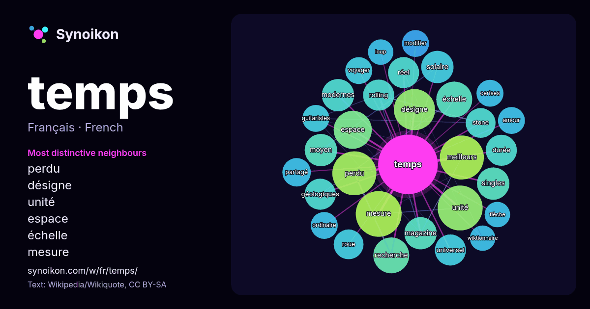

Français · liste des mots du jour
temps
“time” · Les mots trouvés autour de lui dans 1477 occurrences issues de Wikipédia, Wikiquote.

Voisins les plus spécifiques
- perdu 19×
- désigne 17×
- unité 16×
- espace 15×
- échelle 13×
- mesure 13×
- rolling 13×
- singles 13×
- géologiques 12×
- solaire 12×
- universel 12×
- modernes 11×
- stone 11×
- roue 11×
- réel 11×
- meilleurs 11×
- partagé 10×
- cerises 9.9×
- magazine 9.6×
- voyager 9.5×
× = combien de fois plus souvent que dans le texte général de Wikipédia.
Voisins les plus fréquents
- grands 30
- film 27
- mesure 26
- unité 25
- meilleurs 24
- perdu 24
- désigne 21
- chanson 18
- espace 18
- échelle 16
- histoire 16
- recherche 16
- série 15
- système 14
- magazine 13
- modernes 13
- moyen 13
- singles 13
- solaire 13
- cours 12
En contexte
- pas à dégager un concept satisfaisant du temps. Toutes ne sont pas théoriques : le « vécu » perceptible du temps par les hommes est d’une importance capitale Wikipedia snippets · Temps
- et CUT. Le temps universel coordonné ou UTC (en anglais : Coordinated Universal Time) est une échelle de temps adoptée comme base du temps civil international Wikipedia snippets · Temps universel coordonné
- Selon l'Académie française, « au temps » est une expression militaire signifiant qu'un des soldats n'était pas dans le temps en faisant un mouvement, et que Wikipedia snippets · Au temps pour moi
- Pour les articles homonymes, voir Temps (homonymie). Durée En physique, le temps est défini par une mesure : le temps est ce que mesure une horloge. Une Wikipedia snippets · Temps (physique)
- principalement sous la forme du « temps qui passe » que toute existence humaine prend conscience du phénomène du temps. Les interrogations à son sujet accompagnent Wikipedia snippets · Temps (philosophie)
- fraction 1⁄86400 du jour solaire terrestre moyen. L’échelle de temps associée est le temps universel TU. En 1956, pour tenir compte des imperfections de Wikipedia snippets · Seconde (temps)
- Pas le temps Singles de Faf Larage Pas le temps est une chanson enregistrée par le rappeur français Faf Larage. Elle est sortie comme single en septembre Wikipedia snippets · Pas le temps
- un paronyme, voir Temps (homonymie). Sur les autres projets Wikimedia : Le Temps, sur Wikisource Le Temps désigne notamment : Le Temps est le nom de différents Wikipedia snippets · Le Temps
Autres mots
- art
- automne
- carte
- chanson
- chat
- chemin
- cheval
- chien
- climat
- cloche
- cœur
- dieu
- désert
- eau
- famille
- forêt
- histoire
- hiver
- horloge
- jardin
- langue
- miel
- miroir
- monnaie
- montagne
- mort
- mère
- nature
- nourriture
- ombre
- pain
- pluie
- pont
- pouvoir
- printemps
- santé
- science
- sel
- silence
- tempête
- thé
- train
- travail
- trésor
- vie
- ville
- vérité
- étoile
- île
Précalculé le 2026-10-09 avec les paramètres par défaut (±5 mots, corpus moyen). La carte interactive peut l’actualiser avec des données en direct.
Interface traduite automatiquement ; corrections bienvenues.